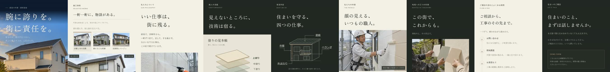

匠塗の動画に足す場面（2回目・声あり）
相談フォームの場面の後、締めの前に入れます。9つの章で1回ずつ止まり、止まった章の名前を声で言います。約20秒です。
声
- トップから相談まで、迷わず進めるように順番を組んでいます。（トップ→施工事例）
- 会社の考え。
- 職人の流儀。
- 四つの仕事。
- 働く仲間。
- 地域への約束。
- 最後に流れとよくある質問を置いて、相談の前の不安を減らしています。（流れ→相談フォーム）
画面の字：トップから、相談まで。
止まる9か所

動画全体はまだ書き出していません。足すと全体で約63秒になります。